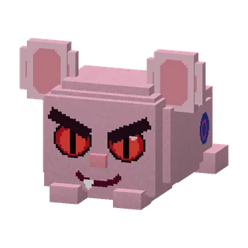

Mika
The evil guh: red slit eyes, angry brows, a fanged grin and a devil tail, with Mika above its head. Mika chases you and shoves you away hard (with a little hop) and a distorted growl — but it never does any damage. Lives in Evil Mika homes and challenging guh caves, and only very rarely wanders Mika's biome.
De kwaadaardige guh: rode spleetogen, boze wenkbrauwen, een grijns met hoektand en een duivelsstaartje, met Mika boven zijn hoofd. Mika zit je achterna en duwt je weg met een vervormd gegrom — maar doet nooit echt pijn, al duwt hij je wel flink weg (met een sprongetje). Woont in Evil Mika-huizen en uitdagende guhgrotten, en zwerft maar heel af en toe door Mika's bioom.
- HealthLevens
- 50
- DamageSchade
- none (knockback only)geen (alleen wegduwen)
- DropsLaat vallen
 1–2 Mika's vet1–2 Mika's vet
1–2 Mika's vet1–2 Mika's vet
Where it spawnsWaar hij spawnt
| BiomesBiomen | GroupGroep | WeightGewicht | Group sizeGroepsgrootte |
|---|---|---|---|
| Het Guheinde | monster | 4 | 1 |
| Mika's bioom | monster | 100 | 1 |
Drops
| ItemVoorwerp | CountAantal | ChanceKans |
|---|---|---|
| 1–2 | alwaysaltijd |
PicturesPlaatjes
